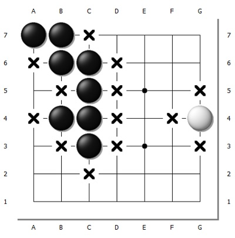
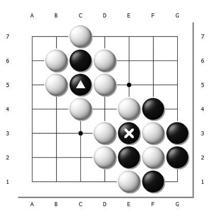
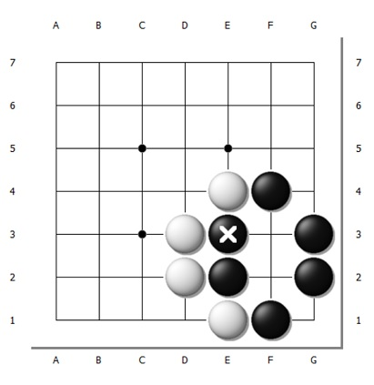
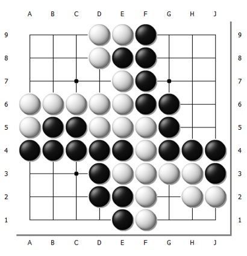
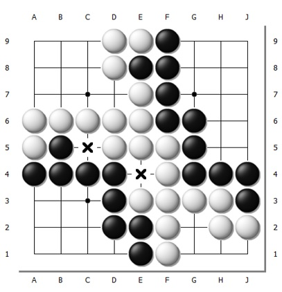

Играют двое, один камнями чёрного цвета, другой − белого.
Партия
начинается на пустой доске,
первыми ходят чёрные. Ходом считается постановка камня на пункт пересечения линий. Ставить
камень можно в любой пункт, без ограничений, в том числе на боковые и угловые пункты.
Поставленные камни не передвигаются, но могут быть захвачены противником и сняты с неё.

Каждый камень должен иметь хотя бы одно дамэ (жизнь) −
соседний
по вертикали или горизонтали (но не по диагонали!) свободный пункт.
Соседние либо связанные непрерывной цепочкой соседей камни образуют группу и делят
дамэ между
собой, т.е. любое дамэ любого камня в группе относится одновременно ко всем камням этой группы.
На рисунке слева дамэ отмечены "х": у белого камня 3 дамэ, у цепочки чёрных камней
10 дамэ.
Цель игры - оградить как можно больше пунктов территории камнями
своего цвета.
Разыграв цвет, игроки по очереди выставляют камни на игровое поле, стремясь оградить его часть
в одном или нескольких местах. Для этого они используют не только свои камни, но и крайние
линии доски. Кроме того, полученное внутренне пространство должно быть недоступно вторжению
извне, разрушению или уменьшению изнутри. В связи с созданием и удержанием территории существует
правило взятия камней. Если после очередного хода камень или линия камней соперника лишаются
последнего дамэ, то они обязательно снимаются с доски.
Запрещается:
1) делать ход, после которого у своего камня или группы камней не окажется ни одного
дамэ, если
при этом не будет снят с доски хотя бы один камень противника.
На рисунке ниже ход чёрных, помеченный треугольничком, запрещён, а ход, помеченный
"х", делать
можно,
т.к. у двух белых камней не осталось дамэ и они снимаются с доски;


2) делать ход, ведущий к повторению позиции на доске (правило ко). Это правило
устраняет
бессмысленное попеременное взятие одиночного камня, как повода к прекращению игры.

Подсчет очков. После того как границы территории определены (рис.
слева),
при последовательном отказе от хода каждым из игроков, партия считается оконченной.
Результат определяется по разнице набранных очков, начисленных - и тут есть два варианта:
подсчет очков по китайским правилам и подсчет очков по японским правилам. Чаще всего на
турнирах здесь применяются японские правила.
По японским правилам:
1) все пленные камни, оставшиеся к концу партии, с доски снимаются;
2) за каждого пленника, снятого во время партии и по ее окончании, начисляется 1 очко;
3) за каждый свободный пункт территории − 1 очко;
4) к очкам играющего белыми прибавляют коми − некоторое заранее оговоренное
целое
количество плюс 0.5 очка в качестве компенсации за право первого хода чёрных и избегания
ничейного результата. Коми для доски 19х19 составляет 6.5 очков. Для доски 9х9 − 4.5. Для
досок
других размеров от 9 до 19 − 5.5.
По китайским правилам:
1) все пленные камни, оставшиеся к концу партии, с доски снимаются;
2) за каждого пленника, снятого во время партии и по ее окончании, не начисляется ни
одного
очка;
3) за каждый свободный пункт территории − 1 очко;
4) за каждый находящийся на поле камень своего цвета (в составе группы, которую нельзя
захватить, "живой группы") − 1 очко.
5) к очкам играющего белыми прибавляют коми - некоторое заранее обговоренное целое
количество плюс 0.5 очка в качестве компенсации за право первого хода чёрных и избегания
ничейного результата. Коми для доски 19х19 составляет 7.5 очков. Для доски 9х9 − 4.5. Для
досок
других размеров от 9 до 19 − 5.5.
Различием подсчетов очков по японским и китайским правилам являются
следующие факты:
1) По японским правилам пленные приносят очки, а по китайским - нет.
2) Размер коми.
3) При игре по китайским правилам партия заканчивается после закрытия всех нейтральных
пунктов,
а при игре по японским правилам этого делать не обязательно, т.к. выставленные камни очков не
приносят.
Далее, на рисунке можно увидеть пример нейтральных пунктов, которые в случае
японских правил закрывать не требуется, а в случае китайских правил они приносят очки.
